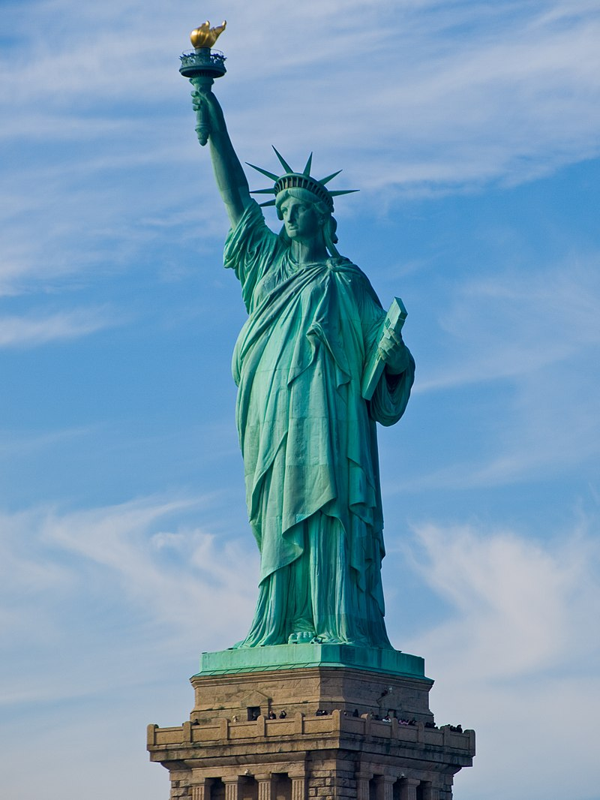
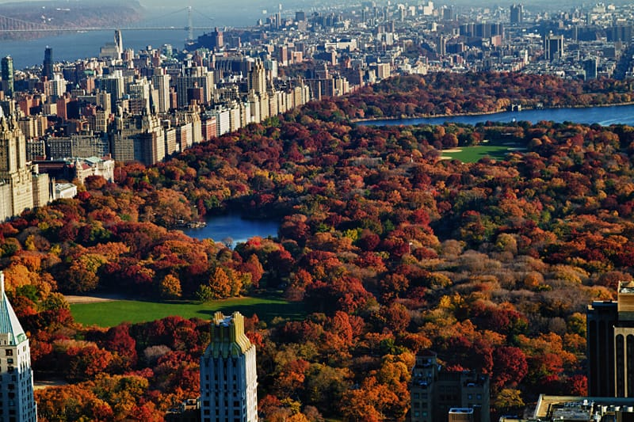

Turismo
Estátua da Liberdade
Para visitar a estátua é necessário a compra de bilhetes turísticos que incluem o transporte via Ferry Boat até a ilha da liberdade. Normalmente, os passes permitem acesso total à ilha onde está a estátua, mas o visitante não tem permissão para adentrar no monumento.Ingressos que permitam a entrada no monumento são fornecidos mediante o pagamento de taxas extras.
O visitante pode pegar a balsa que executa o transporte até a estátua no Battery Park, caso esteja partindo da cidade de Nova Iorque, ou do Liberty State Park, se a partida for de Nova Jérsei.[16][17] Além do transporte, o ticket também inclui a taxa de ingresso no parque nacional instalado na ilha da liberdade e uma visita ao museu de Ellis Island, cuja parada é feita pela balsa que faz o retorno ao ponto de partida.
Times Square

A área está localizada na junção da Broadway com a Sétima Avenida, entre a 42nd Street e a 47th Street, na região central de Manhattan. É uma área comercial, onde todos os prédios são obrigados a instalar letreiros luminosos para propósitos de publicidade.
Cabe ressaltar que a Times Square não se trata de uma rua ou avenida, uma vez que não existe nenhuma via trafegável registrada e denominada como tal no Guia Oficial de Ruas e Endereços da Cidade de Nova Iorque;tampouco pode ser tratada como uma simples esquina, já que a área mapeada pela prefeitura da cidade incluía oficialmente 12 cruzamentos de vias públicas, tendo sido mais recentemente modificada para atender o grande fluxo de turistas e transeuntes, com a definição de áreas exclusivas para pedestres.
Central Park
O Central Park é um grande parque dentro da cidade de Nova Iorque. Possui uma área de 3,41 km² e está localizado no distrito de Manhattan. Foi inaugurado em 1857 com 3,15 km², e é considerado, por muitos nova-iorquinos, um oásis dentro da grande floresta de arranha-céus existente na região. É um lugar onde as pessoas podem diminuir o ritmo frenético de Nova Iorque.
Com os aproximadamente 42 milhões de visitantes anualmente, o Central Park é o parque mais visitado da cidade e aparece em muitos filmes e programas de televisão, tornando-o conhecido no mundo todo. É famoso por ser sede de grandes filmes e programas americanos famosos.